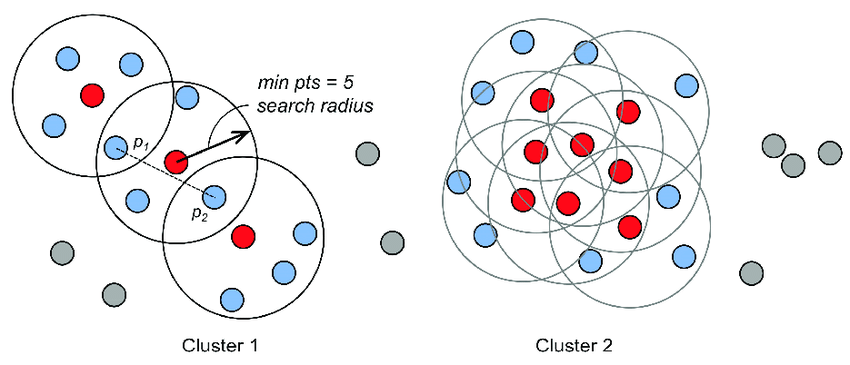
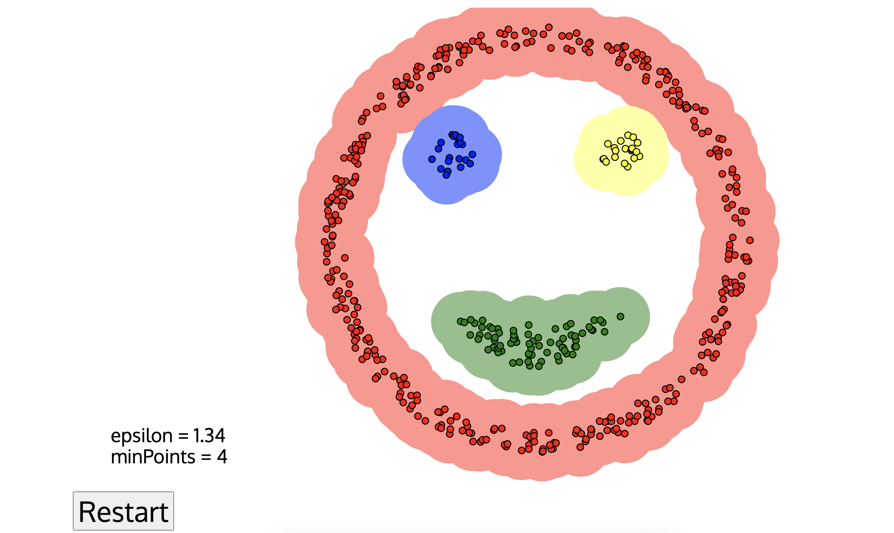
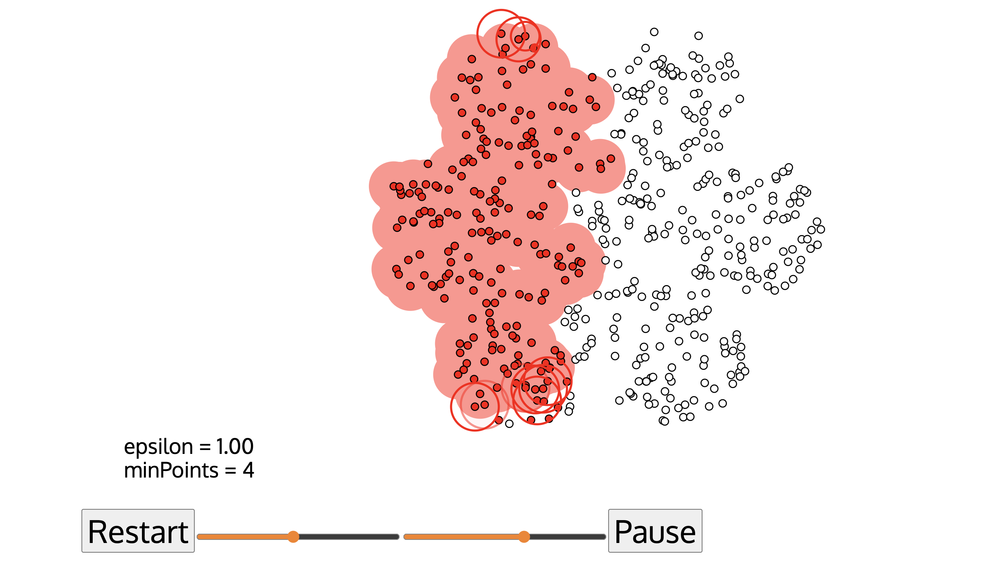
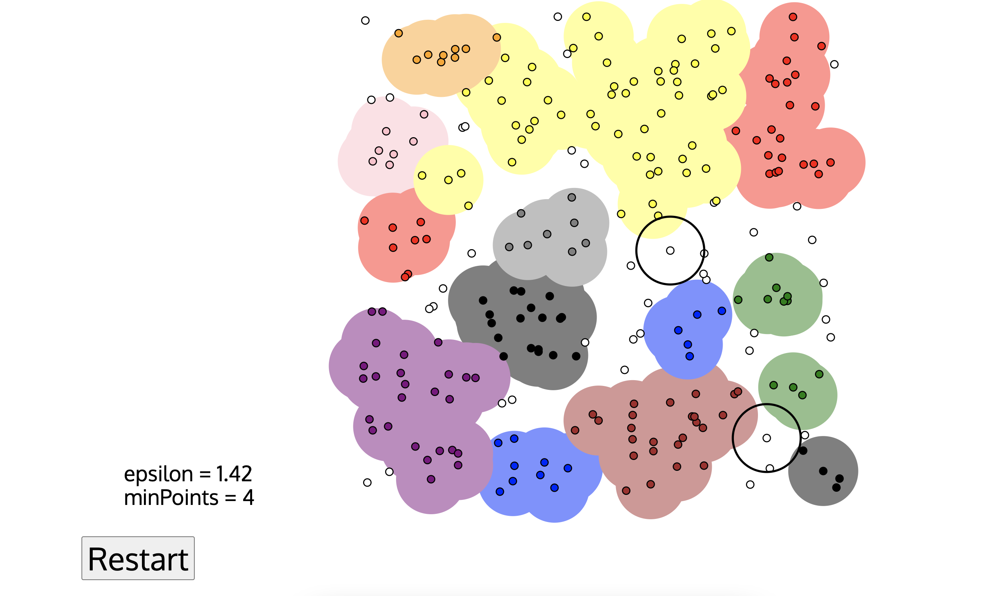
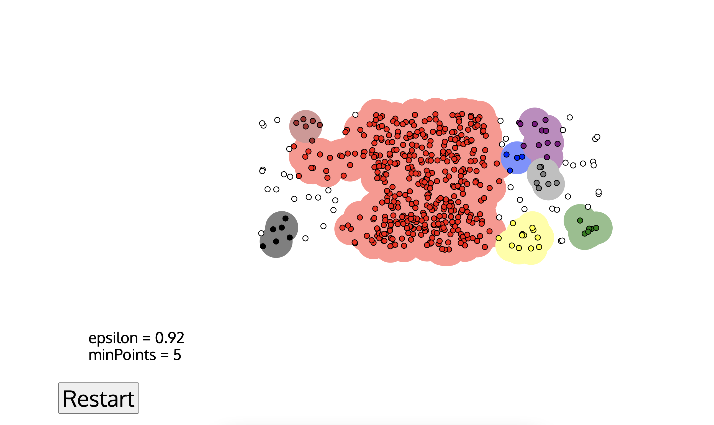

算法介绍
DBSCAN（Density-Based Spatial Clustering of Applications with
Noise）是一种基于密度的聚类算法，可以将数据点分成不同的簇，并且能够识别噪声点（不属于任何簇的点）。
基本思想
在给定的数据集中，根据每个数据点周围其他数据点的密度情况，将数据点分为核心点、边界点和噪声点。
- 核心点是周围某个半径内有足够多其他数据点的数据点
- 边界点是不满足核心点要求，但在某个核心点的半径内的数据点
- 噪声点则是不满足任何条件的点
接着，从核心点开始，通过密度相连的数据点不断扩张，形成一个簇。

算法优劣
DBSCAN算法的优点是能够处理任意形状的簇，不需要先预先指定簇的个数，能够自动识别噪声点并将其排除在聚类之外。
然而，该算法的缺点是对于密度差异较大的数据集，可能无法有效聚类。此外，算法的参数需要根据数据集的特性来合理选择，如半径参数和密度参数。
算法实现
- 先随机找一个点。
- 如果它是离群点，或者是边界点，打个标记后在重新随机找点。
- 如果它是核心点，则将它划分为一个簇C。
- 将它邻域内的点都划进C中，并且如果这些点中还有核心点，则重复步骤3。
- 如果划分停止了，就在未打标记的点中重复步骤1234，直到所有点都被标记
在这个算法中有一个参数需要设置：半径r和密度阈值minPts。除了手动设置参数，下面我们介绍一下如何合理选择参数。
对于半径r，我们先随机找一个点，然后对其他点到这个点的距离排序，然后寻找突变的距离，作为半径r。
对于minPts，以突变距离前的点的排序序号k作为minPts
简单例子
下面我们来用一个简单例子来说明：
假设我们有以下数据点集合,我们可以使用DBSCAN算法来将这些点分成不同的簇。
[(1,1), (1,2), (2,1), (8,8), (8,9), (9,8), (15,15)]
我们这里设置r = 2，minPts = 3。
接下来，我们从数据集中选取一个点，比如第一个点( 1 , 1 ) (1,1)(1,1)作为种子点，并将该点标记为“核心点”，因为它周围有超过minPts个点在半径r的范围内。
然后，我们找到与该点距离在r内的所有点，将它们标记为与该点“密度直达”（density-reachable），并将这些点加入到同一个簇内。这里包括（1，2）和（2，1）。
接着，我们选取下一个未被分类的点，这里是（8，8），将其标记为“核心点”，并将与它距离在r内的所有点加入同一簇中，这里包括（8，9）和（9，8）。
最后，我们选取最后一个未被分类的点，（15，15），但该点只有一个点在r内，不足以满足minPts的要求，因此该点被标记为噪声点。
于是，最终的聚类结果为：
Cluster 1: [(1,1), (1,2), (2,1)]
Cluster 2: [(8,8), (8,9), (9,8)]
Noise: [(15,15)]
在线应用
Link这是个可视化模拟DBSCAN算法的网站，下面是网站里面的交互可视化部分案例图片：



